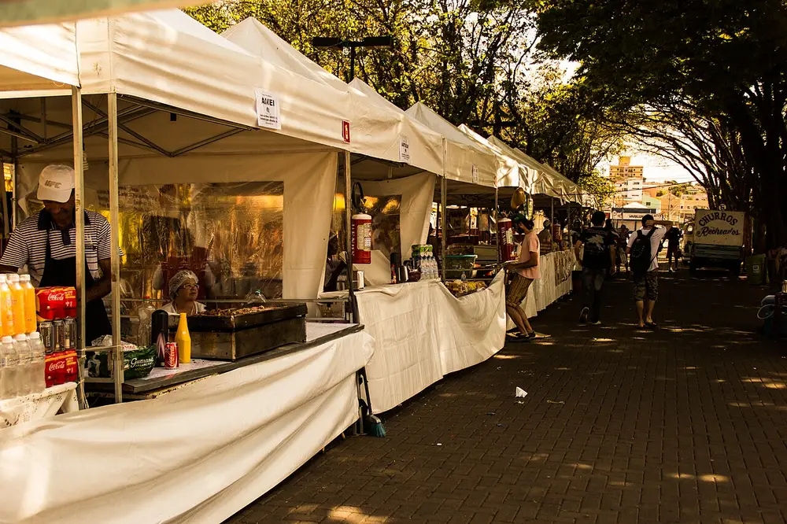
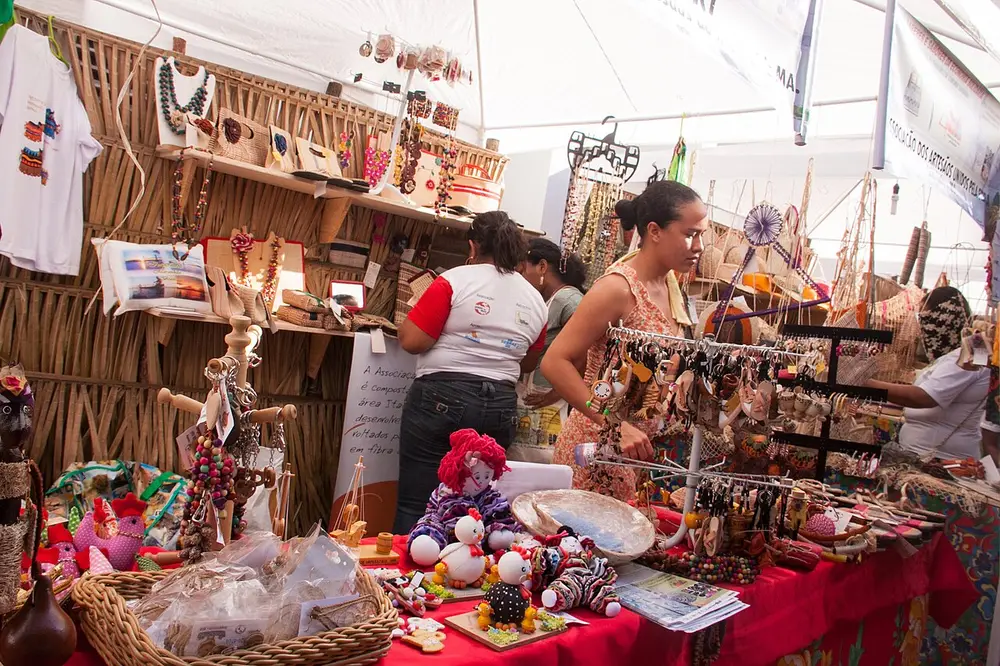
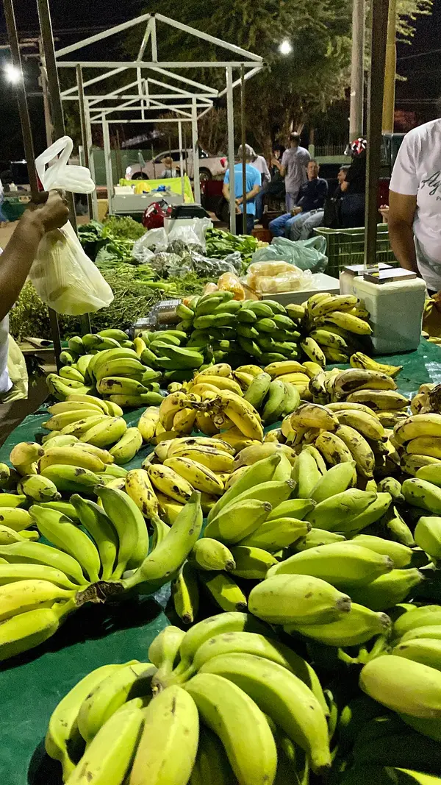
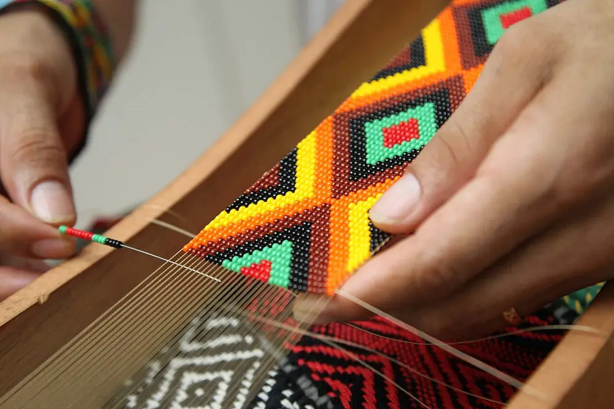
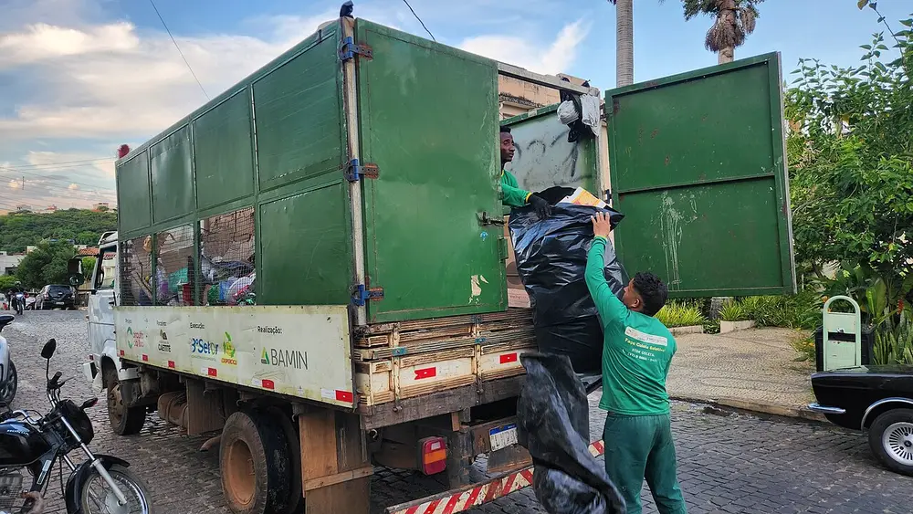
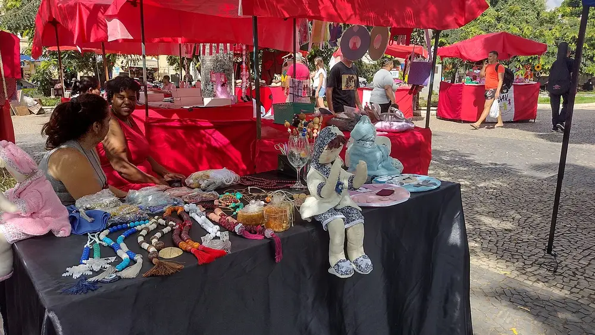
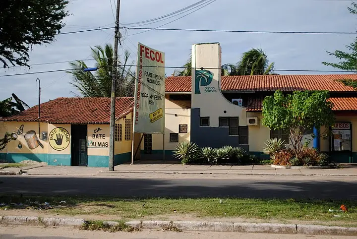
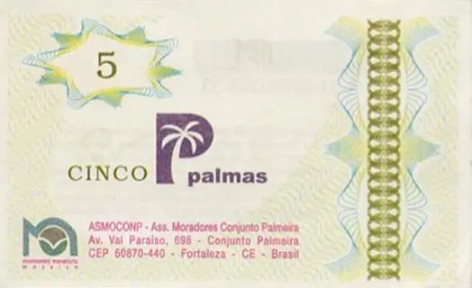

Galeria
Imagens sobre economia solidária, sempre com legenda, descrição e fonte.
Imagens
Fotografias com licença livre publicadas no Wikimedia Commons. Cada legenda informa o autor, a licença e o link da imagem original (consulta em 09/11/2026).







